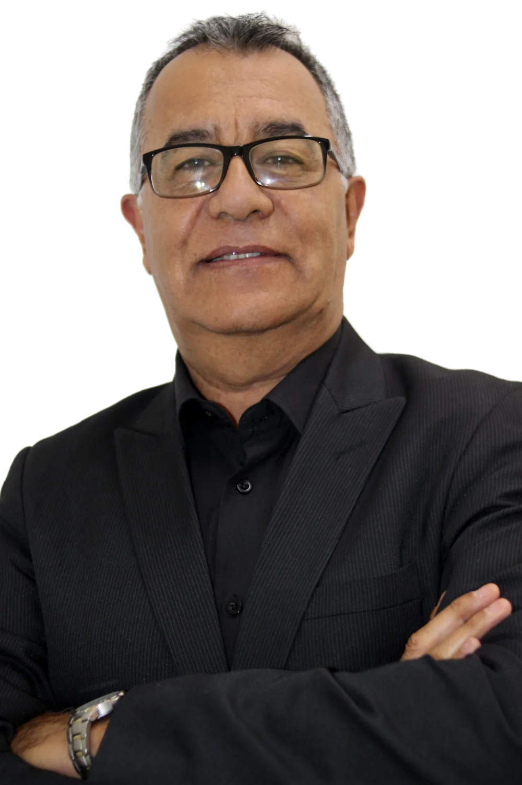
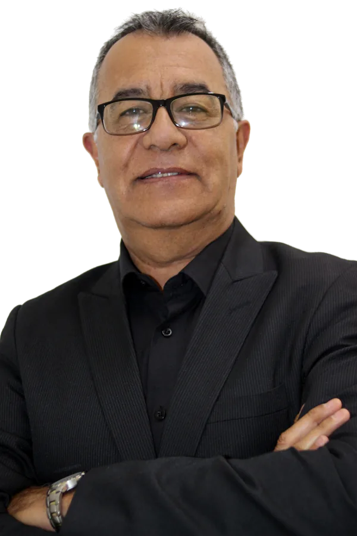

Sobrepiensas todo
Repasas conversaciones, imaginas lo peor y no logras apagar la mente.
Acompañamiento emocional con el Método 4R, coaching de vida y Reiki, para cuando la mente no se apaga, una pérdida no te deja seguir o sientes que tu vida va sola.

Repasas conversaciones, imaginas lo peor y no logras apagar la mente.
Te acuestas cansado, pero el descanso no llega y todo te pesa más de la cuenta.
Una muerte, una separación o un cambio de vida que todavía no logras soltar.
Repites patrones, reaccionas sin pensar y sientes que tu vida la decide otro.
“Necesito ayuda” es como muchas personas empiezan su primer mensaje. Está bien empezar así.Un espacio de escucha, con método y sin juicios, para recuperar la calma y el rumbo.
Hablar con JoséEs la forma en que José acompaña cada proceso. Se combina con coaching y Reiki para trabajar de manera integral: mente, cuerpo y espíritu.
“Para la sanación y la reconexión es necesaria la toma de consciencia de los patrones que subyacen a lo que sentimos.”José Herrera
Tomar consciencia de los patrones que hay detrás de lo que sientes y de lo que se repite en tu vida.
Aceptar esos patrones, hacerte cargo de ellos y empezar a cambiar conductas y emociones asociadas.
Desde el perdón: contigo mismo, con tu historia y con tu familia.
Reinventarte hacia una nueva versión de ti, desde tus propios potenciales y con más consciencia.
Ahí entendemos lo que estás viviendo y definimos juntos el camino, sin compromiso de continuar.
Conversamos sobre lo que estás viviendo, damos el primer paso del Método 4R y, si lo deseas, cerramos con Reiki para que salgas con calma y un plan claro.
La mayoría de procesos toma de 3 a 5 sesiones. En la primera te digo cuántas recomiendo para tu caso.
Para cuando sientes que vives en piloto automático: claridad sobre lo que quieres, decisiones con propósito y un plan para tu siguiente etapa.
Preguntar por WhatsAppEscucha, contención y un camino para aprender a vivir con la pérdida, a tu ritmo y sin prisas.
Preguntar por WhatsAppHerramientas para calmar la mente, descansar mejor y salir del ciclo de pensar en lo peor.
PreguntarSesiones en el consultorio en Manizales o por videollamada, desde cualquier lugar.
PreguntarExplorar la relación entre lo que sientes y tu historia familiar, para comprender patrones que se repiten.
PreguntarCon certificación, para quienes quieren aprender a canalizar Reiki.

“Acompañar no es decirte qué hacer. Es caminar a tu lado mientras encuentras tu propio camino.”Frase propuesta, para que José la valide o la cambie por una suya
Durante más de 30 años he acompañado procesos de vida desde la educación, el coaching y las terapias holísticas. Hoy integro todo lo aprendido en el Método 4R y el Reiki para ayudarte a recuperar la calma y el sentido.
Trabajo en red con psicólogos y médicos: si tu caso necesita otro tipo de atención, te oriento y te remito.
El arco doradoEl espíritu: la luz y el propósito que te guían.
Los dos círculos verdesLa mente y el cuerpo, en equilibrio.
El brote al centroLo que sana cuando los tres se encuentran.
El mensaje ya va escrito. Solo envíalo y cuéntame un poco de lo que estás viviendo.
Te respondo personalmente para entender tu caso y resolver tus dudas, sin costo.
Eliges día y modalidad: en el consultorio en Manizales u online por videollamada.
Una frase de un cliente sobre cómo se sentía antes y después, con su nombre o iniciales y su permiso.
Un testimonio en video, en formato vertical, para que se vea bien en cualquier celular.
Idealmente de alguien que llegó por duelo o ansiedad, para que el visitante se vea reflejado.
¿Tienes otra duda? Escríbela por WhatsApp y José te responde personalmente.
Cada proceso es distinto y no prometemos resultados. Lo que sí encuentras es un espacio de escucha, un método claro y un plan pensado para ti. La mayoría de las personas trabaja entre 3 y 5 sesiones.
No. Es un acompañamiento complementario. Si estás en tratamiento, lo ideal es que continúes con él; este trabajo puede sumar calma y claridad a tu proceso.
La sesión dura 1 hora y cuesta $100.000 COP presencial en Manizales o $80.000 COP online por videollamada.
La sesión a distancia se hace por videollamada y dura lo mismo que la presencial. Muchas personas fuera de Manizales la prefieren por comodidad.
Te recuestas vestido en un espacio tranquilo mientras José posa las manos suavemente o a corta distancia. La mayoría de las personas describe una sensación de calma y relajación profunda.
En el consultorio 6 del Portal Estrella, Cra. 24A # 59-67, Manizales. De lunes a viernes de 8:00 a. m. a 8:00 p. m. y los sábados de 8:00 a. m. a 2:00 p. m. También online desde cualquier país.
Escríbeme por WhatsApp y conversamos 10 minutos para ver cómo puedo acompañarte.
Escribir a JoséEste acompañamiento es complementario y no reemplaza la atención psicológica ni médica. Si estás en una crisis o tienes pensamientos de hacerte daño, busca ayuda inmediata: en Colombia puedes llamar a la Línea 192, opción 4, o acudir al servicio de urgencias más cercano.